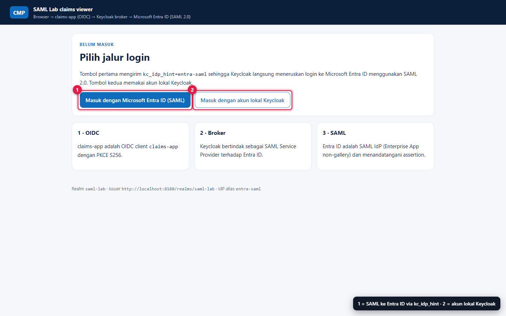

Tiga container.
Nol port ke LAN.
PostgreSQL, Keycloak 26.8.2 dan claims-app berjalan di Docker (Desktop atau Engine di WSL 2). Semua secret dibuat acak di laptop, dipasang sebagai Docker secret, dan tidak pernah dicetak ke layar atau masuk ke git.
Prasyarat
| Komponen | Versi / syarat | Cek cepat |
|---|---|---|
| Docker | Docker Desktop, atau Docker Engine di WSL 2 distro Ubuntu, dengan Compose v2 | docker compose version atau wsl -d Ubuntu -e docker compose version |
| PowerShell | 7.2 atau lebih baru | $PSVersionTable.PSVersion |
| Azure CLI | Login ke tenant target dengan hak membuat Enterprise App (mis. Cloud Application Administrator) | az account show |
| Port lokal | 127.0.0.1:8180 (Keycloak) dan 127.0.0.1:3180 (claims-app) bebas | Get-NetTCPConnection -LocalPort 8180,3180 -State Listen |
| Jam sistem | Sinkron (NTP). Assertion SAML punya masa berlaku ketat | w32tm /query /status |
Invoke-SamlLab.ps1 mencoba docker info di Windows; jika gagal, ia otomatis menjalankan scripts/lab.sh di dalam WSL. Paksa dengan -Engine wsl atau -Engine desktop.Komponen di labs/saml-entra-keycloak/compose.yaml
| Service | Image | Port host | Peran |
|---|---|---|---|
postgres | postgres:17-alpine | tidak ada (internal) | Database Keycloak, volume pgdata, health check pg_isready. |
keycloak | quay.io/keycloak/keycloak:26.8.2 | 127.0.0.1:8180 | kc.sh start --import-realm; mengimpor realm saml-lab dari keycloak/realm-saml-lab.json. Health di port manajemen 9000. |
claims-app | build lokal dari claims-app/ (Node, tanpa dependency) | 127.0.0.1:3180 | Client OIDC yang memverifikasi ID token dan menampilkan klaim penting. |
Hardening yang sudah ada di compose
Bind hanya ke loopback
Semua port memakai
127.0.0.1:. Laptop di jaringan kantor atau kafe tidak membuka Keycloak ke LAN.Docker secrets, bukan environment
Password DB, admin bootstrap dan client secret dibaca dari
/run/secrets/*saat start, sehingga tidak terlihat didocker inspect.claims-app tanpa privilege
read_only: true,cap_drop: [ALL],no-new-privileges:true.Start bertahap dengan health check
Keycloak menunggu PostgreSQL healthy; claims-app menunggu Keycloak healthy (
/health/ready,start_period90 detik).
Mengapa KC_HOSTNAME paling penting
PENTINGKC_HOSTNAME=http://localhost:8180 menentukan tiga nilai sekaligus: URL yang dilihat browser, SAML SP entity ID http://localhost:8180/realms/saml-lab, dan OIDC issuer. Entity ID dan Reply URL di Entra harus persis sama dengan nilai yang diturunkan dari hostname ini.
AADSTS700016 (Identifier) atau AADSTS50011 (Reply URL), dan claims-app menolak ID token karena iss berbeda. Jalankan ulang configure setelah mengganti hostname.KC_HOSTNAME_BACKCHANNEL_DYNAMIC=true mengizinkan claims-app menukar code di http://keycloak:8080 (jaringan container) sementara issuer tetap http://localhost:8180.Jalankan
Ambil kode lab, lalu masuk ke folder script
Kode Docker Compose dan script berada di repositori sumber privat. Akses repo diperlukan; situs panduan publik tidak menyertakan secret, backend, atau kode lab. Jika repo sudah ada di laptop, langsung masuk ke folder script.
gh repo clone benyibrani_microsoft/cmp-azure-identity-lab cd cmp-azure-identity-lab\labs\saml-entra-keycloak\scriptsBuat secret, build, start, tunggu sehat
./Invoke-SamlLab.ps1 -Action upPertama kali butuh beberapa menit karena image Keycloak dan PostgreSQL ditarik dan claims-app di-build. Script berhenti setelah
keycloak healthylalu menampilkandocker compose ps. Di Linux/macOS/WSL setara dengan./lab.sh up.Login Azure CLI ke tenant target
az login --tenant <tenant-id>Konfigurasi Entra dan Keycloak
./Invoke-SamlLab.ps1 -Action configureMenjalankan langkah 2 (
New-EntraSamlApp.ps1) lalu langkah 3 (Set-KeycloakEntraBroker.ps1). Idempotent: aman diulang.Buka aplikasi
start http://localhost:3180


kc_idp_hint=entra-saml sehingga langsung ke broker SAML; tombol lokal memakai prompt=login ke form Keycloak.Secret lokal
Dibuat sekali oleh up (atau lab.sh init) di labs/saml-entra-keycloak/.local/secrets/: 32 byte acak, base64url. Folder .local/ di-ignore oleh git dan tidak ikut ke image portal.
| File | Dipakai oleh |
|---|---|
kc_db_password | PostgreSQL dan Keycloak |
kc_admin_password | Admin bootstrap Keycloak lab-admin |
claims_app_client_secret | Client OIDC confidential claims-app (realm import + aplikasi) |
claims_app_cookie_secret | HMAC cookie sesi claims-app |
local_user_password | User lokal Keycloak lab-local (dibuat oleh configure) |
Salin password ke clipboard tanpa menampilkannya:
Get-Content ..\.local\secrets\kc_admin_password -Raw | Set-Clipboard # admin console, user lab-admin
Get-Content ..\.local\secrets\local_user_password -Raw | Set-Clipboard # user lokal lab-localAdmin console: http://localhost:8180/admin/ → realm saml-lab.
Operasi harian
| Perintah | Efek |
|---|---|
./Invoke-SamlLab.ps1 -Action status | Status container dan health. |
./Invoke-SamlLab.ps1 -Action logs -Service keycloak | 200 baris log terakhir (keycloak, claims-app, postgres). Sumber utama diagnosis error broker. |
./Invoke-SamlLab.ps1 -Action down | Stop container, data Keycloak tetap ada. |
./Invoke-SamlLab.ps1 -Action reset | Stop dan hapus volume database. Realm diimpor ulang saat up; jalankan configure lagi. |
Masalah umum saat start
| Gejala | Penyebab | Perbaikan |
|---|---|---|
Keycloak did not become healthy in time | DB belum siap, image masih ditarik, atau RAM WSL kurang | Lihat -Action logs -Service keycloak; beri WSL minimal 4 GB di .wslconfig. |
port is already allocated | Port 8180/3180 dipakai proses lain | Hentikan proses tersebut. Jika port diganti, ubah juga KC_HOSTNAME dan jalankan ulang configure. |
localhost:8180 tidak terbuka dari Windows padahal container sehat | Forwarding localhost WSL nonaktif | Pastikan localhostForwarding tidak dimatikan di .wslconfig, lalu wsl --shutdown. |
Password admin tidak diterima setelah reset | Admin bootstrap hanya dibuat saat database kosong | Gunakan password di kc_admin_password; jangan hapus file secret tanpa reset. |